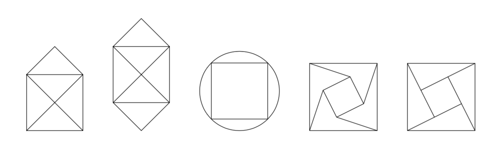
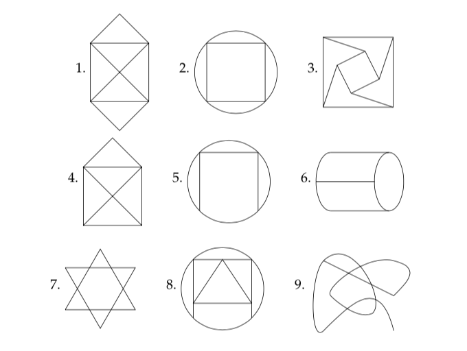
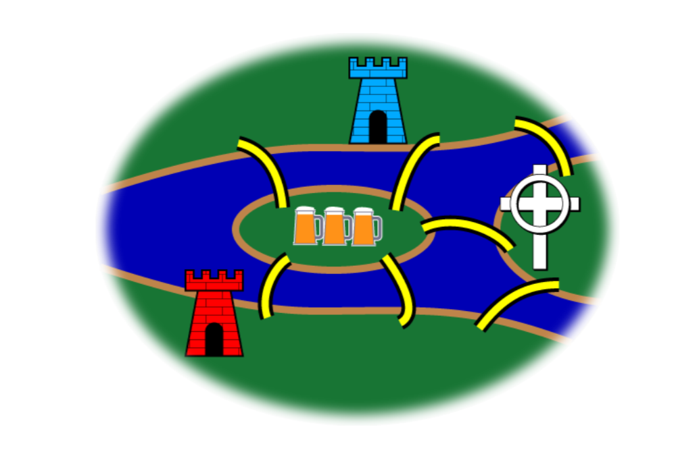

4 Paths in Graphs
4.1 Definition of a path
- Informally, a path in a graph is a sequence of edges, each one incident to the next.
- Can also be described as a sequence of vertices, each one adjacent to the next.
- For directed graphs, we require that the directions of the edges be compatible.
More formally, let \(n\) be a nonnegative integer and \(G\) an undirected [directed] graph. A path of length \(n\) from vertex \(v_0\) to vertex \(v_{n}\) in \(G\) is a sequence of \(n\) edges \(e_1 , \dots , e_n\) of \(G\) such that when \(1 \le i \le n\), then
- \(e_i = \{v_{i-1}, v_i\}\) [\(e_i = \langle v_{i-1}, v_i \rangle\)]
A path is a circuit if it begins and ends at the same vertex and has length \(\ge 1\).
A path or circuit is simple if it does not include the same edge more than once.
4.1.1 Questions
What is a path of length 0?
Can a path of length 1 be a circuit? If so, draw an example. If not, explain why not.
Why are paths defined in terms of edges rather than vertices? In what situations does it matter? When does it not matter?
4.2 Paths and Isomorphism
If \(f : G \to H\) is an isomorphism, then \(f\) maps paths in \(G\) to paths in \(H\). (Why?) This can be useful for finding and isomorphism between \(G\) and \(H\) or for showing that there is no isomorphism.
Answer some questions about the two graphs below.
Compute the degreee sequences for each graph.
Find the shortest and longest simple paths from \(u_1\) to \(u_4\).
Are the graphs isomorphic? Explain.

Answer some questions about the two graphs below.
Compute the degreee sequences for each graph.
Find the shortest and longest simple paths from \(u_1\) to \(u_2\).
Are the graphs isomorphic? Explain.

4.3 Connectedness
An undirected graph is connected if there is a path between every pair of vertices.
A directed graph is strongly connected if there is a path between every pair of vertices.
A directed graph is weakly connected if the underlying undirected graph is connected.
A connected component of a subgraph \(H\) of a graph \(G\) is maximal connected subgraph. That is, \(H\) must be a subgraph of \(G\), \(H\) be connected, but \(H\) cannot be a subgraph of a larger connected subgraph of \(G\).
Draw a directed graph with 6 vertices that is weakly connected but not strongly connected.
Draw an undirected graph with two connected components.
4.4 Planar Graphs
- A planar graph is a graph that it can be drawn in the plane without any edges crossing.
- Show that \(K_4\) and \(Q_3\) are both planar graphs.
4.5 Euler and Hamilton Paths
An Euler path is a path that visits every edge of a graph exactly once.
A Hamilton path is a path that visits every vertex exactly once.
Euler paths are named after Leonid Euler who posed the following famous problem about the bridges in Königsberg.
4.5.1 Königsberg Bridge Problem
One of the founders of graph theory was Leonid Euler (one of the greatest mathematicians who ever lived). At the time he was alive, the city of Königsberg had seven bridges connecting the two banks of the river flowing through downtown and two islands in that river. Here are a couple maps of downtown Königsberg at the time. One is a bit stylized.

As the story goes, the residents of Königsberg enjoyed walking the bridges. The question is this: How can someone take a Sunday afternoon walk that starts and ends in the same place and crosses each bridge exactly once? (Leaving the map, renting hot air balloons, swimming, etc. are not allowed.)
We’ll return to this problem in just a moment. But first, a different sort of puzzle.
4.6 Can you trace it?
Perhaps you have seen the following type of ``puzzle’’. The goal is to trace the figures without lifting your pencil from the paper and without repeating anything.
Which kind of path is this puzzle asking for?
Which of these can you trace in this manner?

- Create a graph that represents the Königsberg Bridge Puzzle (so it can be traced in this manner, if and only if the Königsberg Bridge Puzzle has a solution). What are the vertices? What are the edges? What type of graph is it?
- Can you trace the Königsberg Bridge graph?
4.7 Relationships in Graphs
Here are some graphs.

Add dots showing vertices so that each graph is a planar graph.
Fill in the table below for the graphs above. Do you notice any patterns? Can you make any conjectures? Can you prove any of the conjectures? (Note: an even vertex is a vertex with even degree. An odd vertex is a vertex with odd degree.)
| Graph | number of even verticies | number of odd vertices | total degree | number of vertices | number of edges | number of regions | Euler path? | Euler circuit? |
|---|---|---|---|---|---|---|---|---|
| 1 | ||||||||
| 2 | ||||||||
| 3 | ||||||||
| 4 | ||||||||
| 5 | ||||||||
| 6 | ||||||||
| 7 | ||||||||
| 8 | ||||||||
| 9 | ||||||||
4.8 Meanwhile, Back in Königsberg
Here are some extensions to the Königsberg Bridge problem. First, we embelish the map a bit: The northern bank of the river is occupied by the Schloss, or castle, of the Blue Prince; the southern by that of the Red Prince. The east bank is home to the Bishop’s Kirche, or church; and on the small island in the center is a Gasthaus, or inn.

It being customary among the townsmen, after some hours in the Gasthaus, to attempt to walk the bridges, many have returned for more refreshment claiming to have walked each bridge exactly once. However, none have been able to repeat the feat by the light of day.
- The Blue Prince’s eighth bridge. The Blue Prince, having analyzed the town’s bridge system by means of graph theory, concludes that the bridges cannot be walked. He contrives a stealthy plan to build an eighth bridge so that he can begin in the evening at his castle, walk the bridges, and end at the Gasthaus to brag of his victory. Of course, he wants the Red Prince to be unable to duplicate the feat. Where does the Blue Prince build the eighth bridge?
- The Red Prince’s ninth bridge. The Red Prince, infuriated by his brother’s solution to the problem, wants to build a ninth bridge, enabling him to begin at his castle, walk the bridges, and end at the Gasthaus to rub dirt in his brother’s face. Furthermore, his brother should then no longer walk the bridges himself. Where does the Red Prince build the ninth bridge?
- The Bishop’s tength bridge. The Bishop has watched this furious bridge-building with dismay. It upsets the townspeople and, worse, contributes to excessive drunkenness. He wants to build a tenth bridge that allows all the inhabitants to walk the bridges and return to their own beds. Where does the Bishop build the tenth bridge?